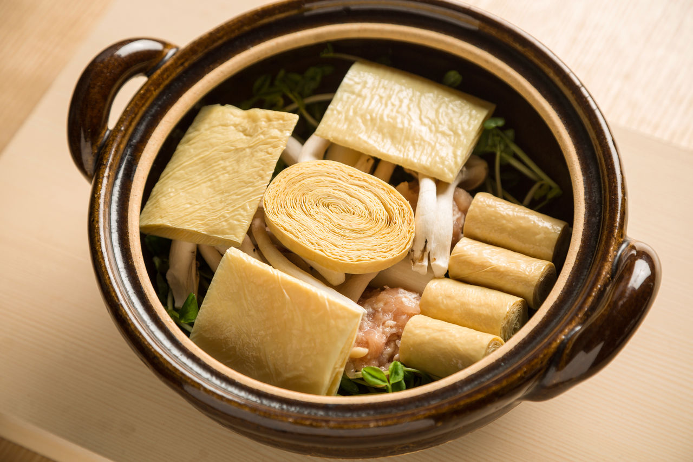

Nara
L'histoire de Nara
Nara est une ville du Japon, capitale de la préfecture du même nom située dans la région du Kansai,
proche de Kyōto.
Elle fut la capitale du Japon entre 710 et 784 et les monuments historiques de l'ancienne ville ont
été inscrits au patrimoine mondial de l'humanité en 1998.
La ville compte une université privée, l'université de Nara. Nara fut pendant le viiie siècle la
capitale du Japon, sous le nom de Heijō-kyō (ou Heizei-kyō),
depuis sa fondation en 710 (lors de l'accès au trône de l'impératrice Gemmei), jusqu'en 784,
c'est-à-dire durant l'époque de Nara.
La ville de Nara, située à l'extrême nord de la préfecture de Nara, mesure 22,2 km du nord au sud
et 33,5 km de l'est à l'ouest.
Le point le plus élevé de la ville est le Kaigahira-yama, une colline culminant à 822 mètres d'altitude.

Les monuments et activités de Nara
Gangō-ji
Le Gangō-ji est un ancien temple bouddhiste qui fut l'un des Nanto Shichidai-ji de Nara au
Japon.
Le temple fait partie depuis 1998 des monuments historiques de l'ancienne Nara inscrits au patrimoine
mondial de l'UNESCO.
Le temple avait été fondé par Soga no Umako dans la ville d'Asuka mais il fut déplacé à Nara en 718
après que celle-ci fut devenue la capitale du Japon.
Kōfuku-ji
Le Kōfuku-ji est un temple bouddhiste de la cité de Nara (préfecture de Nara, au Japon).
C'est le temple familial des Fujiwara et le principal temple du bouddhisme Hossō-shū.
Il est également appelé, avec l'Enryaku-ji, Nanto-Hokurei, terme désignant les deux temples les plus
puissants pendant l'ère Heian : le Kōfuku-ji au sud (Nanto, ville du sud) et l'Enryaku-ji sur le mont Hiei,
au nord (Hokurei, sommet du nord). Le temple fait partie depuis 1998 des monuments historiques de
l'ancienne Nara inscrits au patrimoine mondial de l'UNESCO.
Tōdai-ji
Le Tōdai-ji (« grand temple de l’Est »), de son nom complet Kegon-shū daihonzan Tōdai-ji,
est un temple bouddhique situé à Nara au Japon. Il est le centre des écoles Kegon et Ritsu,
mais toutes les branches du bouddhisme japonais y sont étudiées et le site comprend de nombreux temples
et sanctuaires annexes. Dans l’enceinte se trouve la plus grande construction en bois au monde toujours
existante le Daibutsu-den,
qui abrite une statue colossale en bronze du bouddha Vairocana appelée Daibutsu, c'est-à-dire « Grand
Bouddha ».
Le bâtiment, d’une largeur de huit travées de piliers (soit 57 mètres), est un tiers plus petit que le
temple originel qui en comprenait douze.
Yakushi-ji
Le Yakushi-ji est un temple situé dans la partie sud-ouest de la ville de Nara. C'est le
temple principal de la secte Hossô, la plus ancienne secte bouddhiste du Japon. Il est dédié au bouddha de
la médecine : Yakushi Nyorai.
Le temple a été inscrit au patrimoine mondial en 1998 avec plusieurs autres temples de Nara (dont le
Tōdai-ji, le Kōfuku-ji et le Kasuga-taisha).
La nourriture de Nara
Asuka nabe
C’est un plat originaire de la région d’Asuka dans la préfecture de Nara. Des morceaux de
poulet et des légumes sont cuits dans un bouillon préparé à base de lait,
de miso ou du bouillon de poulet. Il peut être consommé tel quel dans son bouillon, sans rien ajouter,
ou après y avoir mélangé un oeuf battu. C’est un plat copieux et sain.
Kakinoha Zushi
Ce sont des sushis au maquereau, au saumon ou à la dorade et au riz vinaigré, enveloppés
dans des feuilles de kaki. Riches en tanin,
les feuilles de kaki servaient au départ à leur conservation et les sushis ainsi enveloppés étaient
servis durant les fêtes estivales.
Les feuilles de Kaki apportent aux sushis une saveur toute particulière.
Somen
Les somen sont des nouilles sèches, très fines (seulement quelques millimètres de largeur)
et blanches. Les somen produites à Miwa, lieu réputé pour la qualité de l’air et de l’eau, sont de très
grande qualité.
Descendant des nouilles Sakubei, introduites de Chine par Ganjin Wajo il y a 1300 ans, les somen sont
généralement servis froid avec des glaçons et trempés dans de la sauce tsuyu mais parfois servis chaud ou en
friture.
Certains établissements vous proposeront de « mettre la main à la pâte » en vous faisant étirer vous
même les nouilles.
Saké
Nara est le berceau des sakés japonais les plus raffinés. Le saké japonais est une boisson
alcoolisée à base de riz. De type doux ou sec,
il peut être dégusté froid ou chaud. Plusieurs brasseries de saké peuvent être visitées à Nara et vous
proposeront des dégustations.
Kyoto
L'histoire de kyoto
Kyoto ou Kyōto (littéralement « ville capitale ») est une ville japonaise de la région du Kansai, au
centre de Honshū.
Elle fut de 794 à 1868 la capitale impériale du Japon, sous le nom de Heian-kyō (« Capitale de la
paix et de la tranquillité »).
Elle est aujourd'hui, avec ses palais impériaux, ses milliers de sanctuaires shinto et de temples
bouddhistes, le cœur culturel et religieux du pays.
La ville est aussi la capitale de la préfecture de Kyoto ainsi que l'une des grandes villes de la
zone métropolitaine Keihanshin (Osaka-Kobe-Kyoto).
Sa population est de 1,46 million d'habitants (estimations 2020).

Les monuments et activités de Kyoto
Kinkaku-ji
Le Kinkaku-ji (« temple du Pavillon d'or ») est le nom usuel du Rokuon-ji (« temple impérial du
jardin des cerfs ») situé à Kyōto au Japon.
Chateau de Nijo
Le château de Nijō se trouve à Kyoto, au Japon. C'est Tokugawa Ieyasu qui le fit construire en
1603.
Il se constitue de deux cercles concentriques de fortifications, des palais Ninomaru et Honmaru, de divers
bâtiments de soutien et de plusieurs jardins.
Il couvre une surface totale de 275 000 m2 dont environ 8 000 m2 de constructions.
Fushimi Inari Taisha
Le Fushimi Inari-taisha est le sanctuaire principal de la déesse (kami) Inari et est situé dans
le district de Fushimi-ku à Kyoto au Japon.
Kiyomizu-dera
Le temple Kiyomizu ou Kiyomizu-dera fait référence à un complexe de temples bouddhistes et
shintoïstes mais est principalement utilisé pour un seul :
l'Otowa-san Kiyomizu-dera à l'est de Kyoto, qui est l'un des endroits les plus célèbres de la ville. Il a
été enregistré au patrimoine mondial culturel de l'UNESCO en 1994.
La nourriture de Kyoto



Kaiseki
La cuisine kaiseki, en japonais kaiseki ryōri, désigne dans la gastronomie japonaise une forme
traditionnelle de repas, composé de plusieurs petits plats servis conjointement.
Kaiseki est souvent servi dans les ryokan au Japon, mais est aussi servi dans de petits restaurants. Kyoto
est connu pour ses kaiseki.
À Kyoto, le style kaiseki est parfois appelé cuisine de Kyoto, pour souligner ses origines.
Tsukemono
Tsukemono (« choses macérées ») est le nom japonais donné aux techniques de conservation des
aliments basés sur la macération des aliments
(dans une saumure, du vinaigre ou encore une solution à base de sake kasu, avec ou sans adjonction
d'aromates)1 ainsi qu'aux aliments produits par ces techniques.
Les tsukemono sont parfois aussi appelés pickles, terme anglais pour désigner les produits saumurés ou
préservés à l'aide de vinaigre.
Yuba
Arrivé tout droit de Chine, le yuba est un aliment traditionnellement transformé, à base de
soja.
Lorsque le lait de soja, fabriqué à partir de graines de soja filtrées, est chauffé, une peau se forme à la
surface,
tout comme celle qui se forme à la surface du lait. Cette peau, c’est justement le yuba
C’est ce que nous a expliqué Ochi Tadahiro, propriétaire sur la huitième génération de Senmaruya, un
restaurant à Kyoto fondé en 1804, spécialisé dans le yuba.
Yudofu
Plat « zen » du Japon puisqu'il était très consommé par les moines bouddhistes, le Yudofu
consiste à faire bouillir du tofu avec du kombu,
une algue Japonaise très prisée, le tout avec une de la sauce soja, du dashi et du mirin et/ou du ponzu.
tokyo
L'histoire de Tokyo
Tokyo, anciennement Edo, officiellement Métropole de Tokyo, est de facto la capitale actuelle du Japon.
Elle est la plus peuplée des préfectures du Japon, avec plus de 13 831 421 habitants intra-muros en
2018 et 42 794 714 dans l'agglomération,
et forme l'aire urbaine la plus peuplée au monde. Située sur la côte est de l'île principale de
l'archipel japonais, Honshū, Tokyo est l'une des quarante-sept préfectures du Japon.
Principal centre politique de l'archipel depuis le xviie siècle, la ville accueille la plupart des
institutions du pays : la résidence principale de l'empereur du Japon,
du Premier ministre, le siège de la Diète (le parlement japonais), du Cabinet, les ministères qui
le constituent ainsi que toutes les ambassades étrangères.

Les monuments et activités de Tokyo
Asakusa
Asakusa est un quartier populaire de Tokyo de l'arrondissement Taitō, proche d'Ueno, le
long de la rivière Sumida, accessible par la rue Kappabashi.
Asakusa est connu des touristes pour son temple bouddhiste Sensō-ji, dédié à la déesse bodhisattva
Kannon. Le temple avec sa pagode à quatre étages,
se trouve au bout d'une grande allée commerçante : Nakamise-dōri.
Musée national
Le musée national de Tokyo, ou TNM, Inauguré en 1872, est le plus ancien et le plus grand
musée du Japon. Il se situe à l'intérieur du parc d'Ueno dans l'arrondissement de Taitō à Tokyo.
Ce musée possède et préserve une collection complète d'œuvres d'arts et d'objets archéologiques du
Japon et d'autres pays de l'Asie de l'Est.
Tokyo skytree
La Tokyo Skytree est une tour de radiodiffusion du Japon, située dans l'arrondissement
Sumida de Tokyo. Haute de 634 mètres, elle devient,
le jour de son inauguration en 2012, la deuxième plus haute structure autoportante du monde.
Tour de Tokyo
La tour de Tokyo est une tour rouge et blanche située dans l'arrondissement de Minato à
Tokyo au Japon. Son concept est fondé sur celui de la tour Eiffel de Paris. Elle a été réalisée par
l'architecte Tachū Naitō.
La tour mesure 332,6 mètres de haut (soit 7,6 mètres de plus que la tour Eiffel, qui en mesure 325 en
comprenant son antenne) ce qui en fait l'une des plus hautes tours en métal du monde.
L'édifice ne pèse que 4 000 tonnes, ce qui est bien moins que les 10 100 tonnes de la tour Eiffel. La
construction démarre en 1957 et s'achève en 1958.
La tour ouvre au public le 23 décembre de la même année. 176 ampoules réparties à différents endroits
éclairent la tour. L'hiver, elle est illuminée en orange et l'été en blanc.
La nourriture de Tokyo
Ramen
Un rāmen est une recette de cuisine traditionnelle de la cuisine japonaise, à base de
nombreuses variantes de bouillons de nouilles,
agrémentés de poissons, viandes, légumes, algues, œuf, et assaisonnements miso ou sauce de soja...
Importés de Chine au début du xxe siècle,
ils sont à ce jour considérés comme faisant partie de la cuisine japonaise, et de l'art culinaire.
Edomae-zushi
Le Edomae-zushi ou edomae sushi est devenu synonyme de nourriture japonaise. C'est le plat
typique numéro 1 du Japon et plus particulièrement de Tokyo.
S'il existe une multitude de versions du sushi, c'est l'edomae-zushi que le reste du monde connaît sous
le nom tant apprécié de "SUSHI".
Des petits tampons de riz sur lesquels sont disposés une tranche de saumon ou de thon cru.
Tempura
Le ou la tempura est un plat de friture japonais, originaire du Portugal.
Les tempuras sont une adaptation japonaise des peixinhos da horta, introduits par des missionnaires
jésuites portugais au xviie siècle, et qui existent toujours dans la cuisine portugaise.
Par rapport à la recette portugaise, les Japonais ont allégé la pâte et changé les garnitures.
Yakitori
Yakitori (littéralement « oiseau grillé ») désigne, dans la cuisine japonaise, des
brochettes dont chaque morceau a la taille d'une bouchée,
cuites sur un gril. Elles sont traditionnellement à base de poulet.